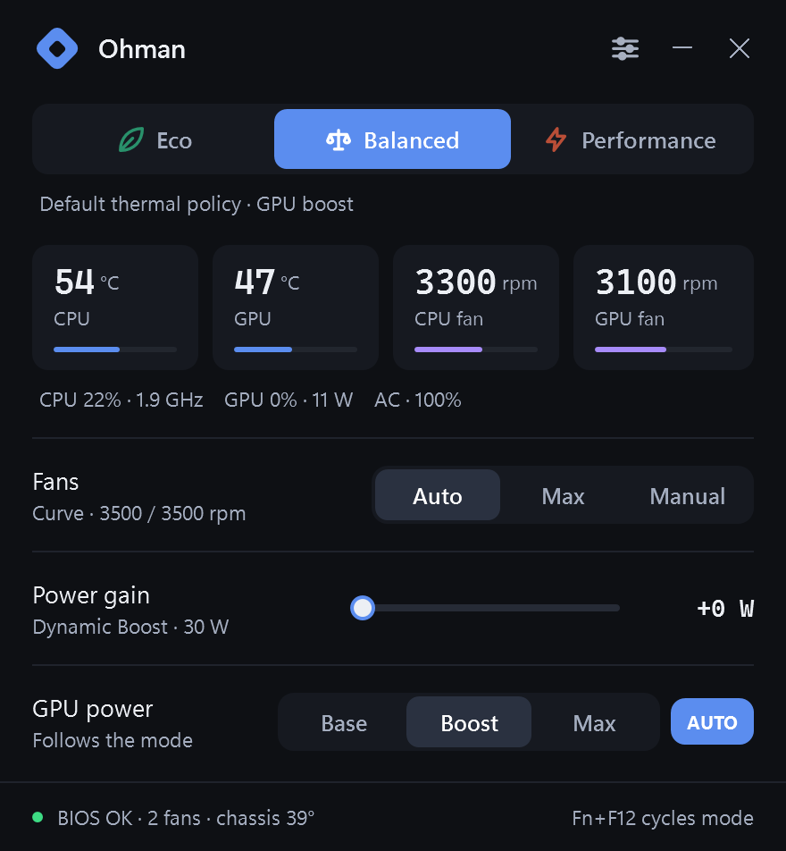
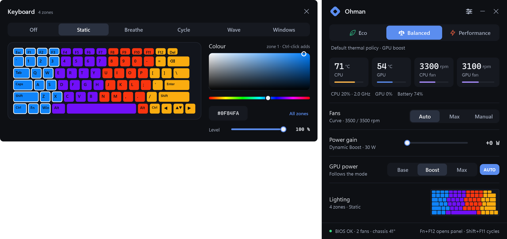

OMEN Gaming Hub's controls. Without OMEN Gaming Hub.
One executable, no services, no drivers, no account, no ads. Same firmware interface as OMEN Gaming Hub, same bytes, nothing else.

What it does
- Modes
- Eco · Balanced · Performance, one tap or Fn+F12. Eco also sets the Windows power mode and GPU base power, as OGH does.
- Fans
- Auto (OGH's own curve for this model, 1800 to 5700 rpm), Max, or Manual per fan.
- Power gain
- OGH's "Smart Performance Gain": +0 to +15 W on the CPU+GPU budget that NVIDIA Dynamic Boost draws from.
- GPU power
- Base · Boost · Max, or follow the mode.
- Per mode
- Fan, power gain and GPU choices are remembered per mode.
- Live
- CPU and GPU temperature, fan speeds, load, clocks, GPU watts, battery.
- OMEN key
- Fn+F12 opens the panel (or cycles modes, or toggles max fan). Shift+F11 cycles modes. OGH's key handler is stopped, reversibly.
- Safety
- A thermal guard forces max fan on a hot CPU, a hot chassis or stalled fans. Fans are never set below 1800 rpm.
- Lighting
- A live keyboard in the panel; click it and an editor slides open beside it: zones, a real colour picker, presets, brightness, Breathe / Cycle / Wave, or hand the keyboard to Windows Dynamic Lighting.
- Extras
- Tray, hotkeys, start with Windows without a UAC prompt, Eco on battery, on-screen flash on key presses.

How it works
HP exposes a BIOS mailbox as the WMI class hpqBIntM. Ohman uses the commands OGH uses: performance mode, max fan, fan levels, CPU+GPU power budget, GPU power, plus read-only queries. The OMEN key arrives as a WMI event (hpqBEvnt). The bytes and the measured firmware behaviour are in docs/research.md.
- 0x1A mode
- 0x27 max fan
- 0x2E fan levels
- 0x29 power budget
- 0x22 GPU power
- 0x20009 lighting
Your laptop
Verified on the HP OMEN Transcend 14 (2024, board 8C58). Every other OMEN and Victus laptop runs in generic mode: the mode bytes the Linux driver documents for its firmware generation, fan control with the same floor and thermal guard, and power or GPU controls only where the firmware answers. A banner asks you to report back so the board can be marked verified.
Adding your laptop
- Run the support-info tool and press the OMEN key when it asks.
It writestools\support-info.cmdtools\support-info.txt: model, board id, BIOS, system-design data, fan table, key event. No personal data. - Open a New laptop support issue with that file, what OGH shows on your model, and ideally OGH's background log (
%LOCALAPPDATA%\Packages\AD2F1837.OMENCommandCenter_v10z8vjag6ke6\LocalCache\Local\HPOMEN\) from a session where you clicked every mode. - A platform is one entry in src/Platform.cs; nothing else is model-specific.
Laptops
Three tiers. Verified: somebody ran the checklist on that machine. Listed: the board id is in the Linux HP driver's tables, so the mode bytes for its firmware generation are known and generic mode uses them. Generic: everything else, driven by what the firmware reports about itself; read-only when it reports nothing usable.
| Model | Board ids | Status |
|---|---|---|
| OMEN Transcend 14 (2024) | 8C58 | Verified |
| OMEN Transcend 14 (2024, other SKU) | 8E41 | Listed |
| OMEN 15 (2019, 15-dc / 15-dh) | 8574, 8600 | Listed |
| OMEN 17 (2019, 17-cb0) | 8603 | Listed |
| OMEN 15 (2020) | 8A15 | Listed |
| OMEN 15 / 17 (2021) | 8BAD | Listed |
| OMEN 16 / 17 (2021 to 2022) | 8A42, 8A43 | Listed |
| Victus 16 (2021 to 2023) | 88F8, 8A25 | Listed |
| Victus 16 S / R (2023 to 2024) | 8A3D, 8B2F, 8BBE, 8BD4, 8BD5, 8C99, 8C9C | Listed |
| Other OMEN 15 / 17 boards in the driver's table (2018 to 2021 generations) | 84DA to 84DC, 8572 to 8575, 8601 to 860A, 8746 to 874A, 8786 to 878C, 87B5, 886B, 886C, 88C8 to 88D2, 88F4 to 88F7, 88FD to 8902, 8912, 8917, 8918, 8949, 894A, 89EB | Listed |
| OMEN 16 (2023 to 2025) | 8BAA, 8BAB, 8BCA, 8BCD, 8C76 to 8C78, 8D24, 8D26, 8D2F, 8E35 | Generic |
| OMEN MAX 16 (2025) | 8D41, 8D87 | Generic |
| OMEN Transcend 16, OMEN 17 (2025) | 8BB3, 8C3B, 8C4D, 8E10 | Generic |
| Victus 15 | 88D9, 88DA, 8A3E, 8C2F, 8C30, 8C3F, 8D07, 8DCD, 8E5E | Generic |
Board id: Settings, Diagnostics in Ohman, or wmic baseboard get product. Not listed is not unsupported: open a support issue and it moves up a tier.